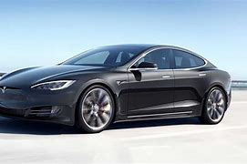
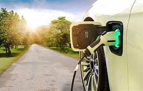
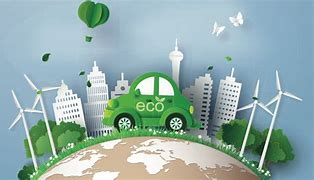
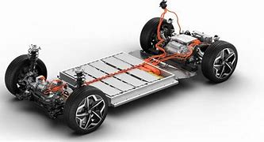
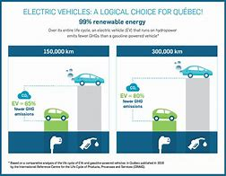

As concerns about climate change and air pollution grow, the automotive industry is undergoing a significant transformation with the increasing adoption of electric vehicles (EVs). This paper explores the environmental impact of electric vehicles, focusing on their potential to reduce greenhouse gas emissions and the challenges associated with their widespread adoption.
One of the primary motivations behind the development and promotion of electric vehicles is their potential to reduce greenhouse gas emissions. Unlike traditional internal combustion engine vehicles, EVs produce zero tailpipe emissions. They are powered by electricity, and the extent to which they reduce overall emissions depends on the source of that electricity. EVs can significantly decrease carbon dioxide (CO2) emissions when charged with electricity from renewable sources, making them an essential tool in the fight against climate change.
Electric vehicles are generally more energy-efficient than their gasoline or diesel counterparts. They convert a higher percentage of the energy from their power source into movement, resulting in less wasted energy and reduced overall energy consumption. This increased energy efficiency not only reduces greenhouse gas emissions but also helps decrease the overall demand for energy resources.
While EVs produce no tailpipe emissions during operation, their environmental impact extends to their manufacturing, charging infrastructure, and battery production. The production of EV batteries, in particular, can have a significant carbon footprint due to the extraction and processing of raw materials like lithium and cobalt. However, advancements in battery technology and recycling efforts are gradually reducing these emissions, making EVs more environmentally friendly throughout their lifecycle.
The widespread adoption of electric vehicles presents challenges related to charging infrastructure and grid capacity. The charging infrastructure must be expanded and made more accessible to accommodate the growing number of EVs on the road. Additionally, the increased demand for electricity to charge EVs may put stress on the power grid. To ensure the sustainable growth of the EV market, investments in charging infrastructure and grid upgrades are necessary.
In conclusion, electric vehicles have the potential to significantly reduce greenhouse gas emissions and combat climate change. While they are not entirely free from environmental impact, advancements in technology and infrastructure are steadily improving their environmental credentials. To maximize the benefits of EVs, it is crucial to prioritize the adoption of renewable energy sources for electricity generation, promote energy efficiency, and continue research into sustainable battery production and recycling methods. As the automotive industry evolves, electric vehicles are likely to play a pivotal role in building a more sustainable and eco-friendly transportation system.
